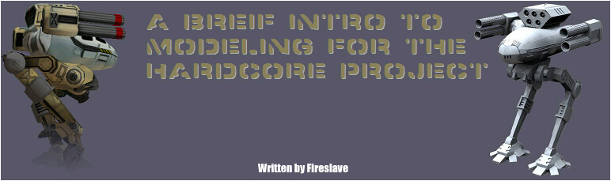
Table of Contents
- Introduction
- The Process
- Making the Model
- Adding Details and Rendering
- UV Mapping
- Ditch Those Ugly Edges
- Using Your Grayscale Image To Make The Alpha Channel
- Rust & Other Fun Stuff
- Combining The Rust With The Shadows
- Adding Materials, Paint, Windows, etc.
- Merging The Layers
- Final details
- Conclusion
Introduction
Ok, for those that do not know, I am a member of the Clash of Steel modeling
team. I have gotten a lot of tips from everyone at the project. I think
I have come a long way in less than 3 months - From zero experience to
having a 'Mech in game. My goal in writing this is not to tell you exactly
how to make a 'Mech for HC nor is it to teach you how to use a 3D program.
My goal is to help people learn the unique things that are required for
a MW4:Mercs 'Mech.
The Basics
What do you technically need?
Before you can make a 'Mech for the game you obviously need some guidelines.
Here they are:
- A 3000 polygon limit. This means 3000 triangles or less. This is not
a hard limit. For example, 3030 will be fine. The goal should never
be to use all the polys you can. If you can do it with 2000, go right
ahead.
- Poseable Model. This means that the arms have to be able to swing
and the legs have to be able to move without hitting some other part
of the 'Mech.
- Workable joints. Where the leg meets the foot, you should see some
sort of joint. Same goes for knees, arms, etc. Just play Mercs and look
at how the 'Mechs move.
- 512x512 Texture with an alpha channel. The alpha should allow the
game skins to show through.
- Dev Team Note: Separate the 'Mech into several pieces.
Below is a standard list of pieces the 'Mech should be separated into.
Also note that each of these pieces (meshes) can only have 256 points.
Try to optimize your low-poly model (i.e., tubes should be octagonal).
A 'Mech is composed by:
- Torso
- Hip
- Left Upper Arm
- Left Gun
- Right Upper Arm
- Right Gun
- Left Upper Leg
- Left Lower Leg
- Left Foot
- Left Toes (Ranges from 1 to 4)
- Right Upper Leg
- Right Lower Leg
- Right Foot
- Right Toes (Ranges from 1 to 4)
Some 'Mechs can have a third leg (i.e., Argus/Thanatos/Novacat):
- Left Middle Leg
- Right Middle Leg
Some 'Mechs can have one or two special sections linked to any of
the 'Mech sections. The special section can be protection-based, such
as the Black Knight's arm shield, or a weapons section, like the TimberWolf's
missile launchers.
Each piece must have a functional joint and they also must move in
any direction so they must have a spherical joint.
- The torso must have a little degree to move in any direction from
the hip.
- Upper arms must float a little in a front-back direction with
Torso and Guns.
The Process: The Way I Make 'Em
All the tools I use are freeware or something we all have:
- Wings 3D. I do all my modeling in wings.
- Blender & Yaf-Ray. I use these to render. (Yaf-Ray is a Blender
plugin)
- UV mapper. May be useful for UV'ing a 'Mech. Wings can UV too, though.
Both have strong points and weak points.
- The Gimp. Excellent free image software. For those who do not want
to buy Photoshop or another professional graphic editing program.
- TGATool2. Simple but useful tool. Lets you edit the alpha texture
of a TGA separately from the main RGB channels.
- MS Paint.
Step 1: Making the model
I use Wings 3D. I create a low poly first and then create a high poly.
So make your low poly now. Keep it under or around 3000 polys please.
Get a good TRO picture to work off of. Ask Gohan if you can not find them.
There are plenty of guides for using Wings 3D so all you have to do is
look around. Remember, you are an artist now, therefore you are allowed
to fix "ugly" parts of the 'Mech. I took quite a bit of liberty on the
head of the Stiletto, for example. I even added fins to the arms to tie
the model together better. Also, try to keep Mercs' "style". Long pointy
fingers are not going to fit in with the other 'Mechs.
I am just going to show you the pictures now:
TRO ART
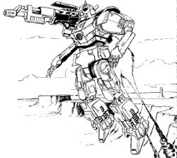
My Low Poly Version
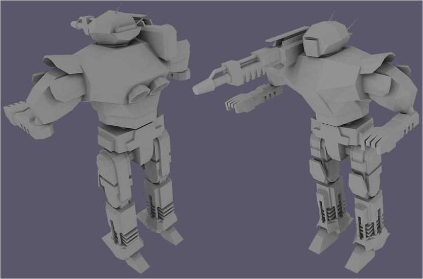
Step 2: Adding Details & Rendering
Ok, after you like your low poly, try and make sure to have others critique
it. Once you hammer out things that you may have missed start adding details.
This is your high ploy. Render these for use on the texture. Take these
renders and touch them up as needed.
Here is an example - the shoulder gun on the Pack Hunter:
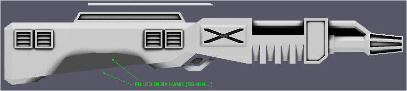
You are going have to make a lot of these. Make sure to render them at
an excessive size. They will look better when shrunken down. Toy with
the settings on your rendering program until you get something that you
think will look nice as a texture. I actually make two renders and combine
them. One is used to simulate daylight lighting from above and the other
has no lights but is set to show off details better. That is how I got
the nice inset looking shading in the smaller details on the above image.
After you get a bunch made, scale them down and place them in a 512x512
texture. It is good practice to place the pieces from the upper 'Mech
on top because many game textures have different colors from top to bottom
(i.e., Most OPS. Skins). Also, try to keep the pieces upright as this
will ensure textures with directional lines (like Deep Woods) look right.
Here is a picture for you all. It was actually rendered at twice this
size with Anti-Aliasing off. I shrunk it so it would fit on this page:
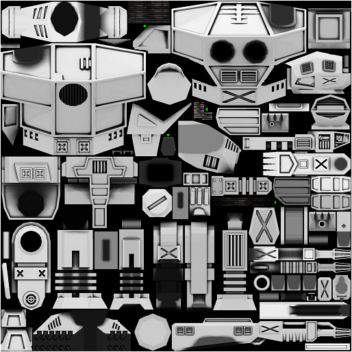
Notice the green arrows. Those things are not from any renders. Things
like that can be useful for certain 'Mech parts (Wires, places you can
not render, some joints, etc.).
Step 3: UV Mapping
I am not going to go into detail here because there are plenty of guides.
I am just going give you an overview of the Fireslave way.
Do each part separately. Make the leg be one file and the arm another.
You can stick them together later on. It is easier anyways to just do
one leg then flip it.
I recommend starting with UV Mapper. It can map from the axis so do just
that. It will not be perfect but we can tweak it in Wings3D.
Start Wings3D and you will see when you try an move the UV onto the texture
that UV Mapper did not do exactly what you wanted. Find the faces that
are messed up and select them with the face tool. Then, hit UV Mapping.
I am not going to explain the process here since there are Wings3D guides
for that.
Anyways, eventually you will have placed all the UV pieces on top of all
the correct pieces of texture. Your 'Mech should look like this only it
better not be a Pack Hunter. ;-)
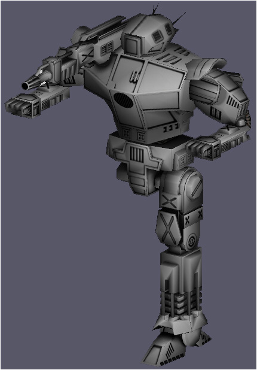
Notice all the black edges on the model? Notice the "zipper" on
the head (lol)? If you did it right, you will have just little bits of
black on the edges. That mean you lined it up nicely and you can give
yourself a "Good job!" sticker.
Step 4: Ditch Those Ugly Edges
This is where MS Paint comes in handy. Use a boring Pixely paintbrush
to paint over the edges. You are confused, I see. Make it look like this:
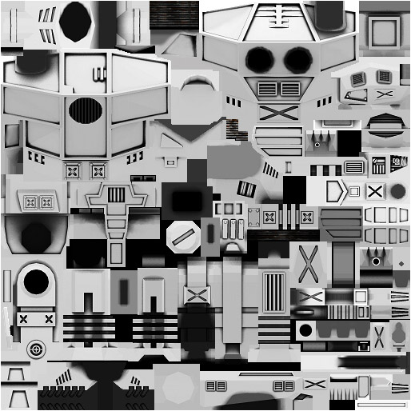
As you can see, most of the borders have been covered up. Now start up
Wings3D. You will see that most of the edges are gone. In some places
you can not paint over the edges (Look at the legs. The edges are on the
render, not between the render and the black BG). The only choice here
is to use Wings3D to edit the UV map just a bit. Move the affected areas
inward a bit away from the edges (we do not want black edges everywhere).
Here is the edgeless version:
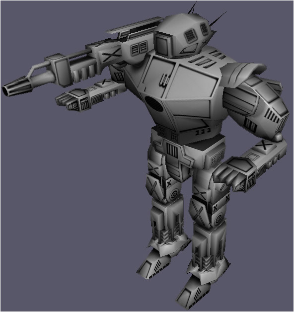
Step 5: Using Your Grayscale Image To Make The Alpha Channel
Ok, what you want to do now is make that grayscale map into a transparency
map. You can do that in your paint package as well but here is how I did
it:
- I took the grayscale image and inverted (colors, I did not flip it
over) it in MS Paint. This is necessary because white is solid and black
is see through. We do not want a black 'Mech with white shadows...
- After you have it inverted, you want to save it as a .bmp.
- Now open it up with TGA Tool 2. You actually have to click open because
TGA Tool 2 will not let you just double click it in explorer.
- In TGA Tool 2, you will see an option called "Create Alpha Template."
Click it and you will see it appear in the upper right of the screen.
You now have an alpha channel.
- Double click on the main image and it will open itself up in MS Paint.
Just paint the whole thing black and hit save.
- Now you got your rendered map all made up so all you have to do is
save it. I saved mine as "Shadow_Layer.tga." You might as well name
yours the same way so you see what I am talking about later on in the
tutorial.
Lets see if you did this right. Open up your .tga with the Gimp, Photoshop
or the photo editing software of your choice. It should be transparent
but with shading and dark lines. If you are using the Gimp, it will look
something like this:
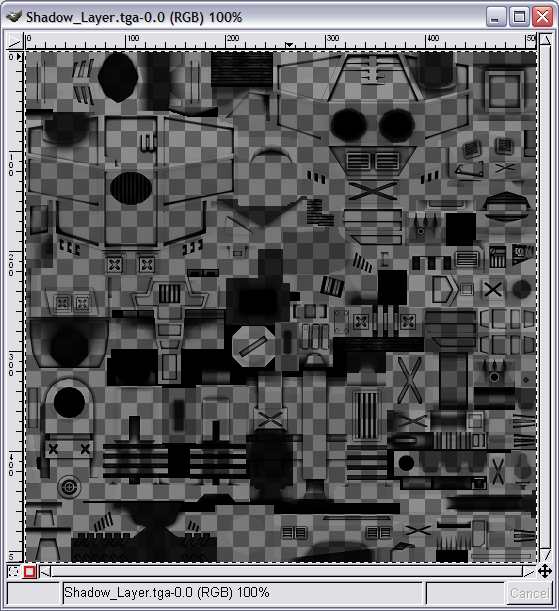
Step 6: Rust & Other Fun Stuff
More than likely, you did not find steps 2 through 5 extremely exciting.
Now you get a chance to flex your artistic muscles. You are going to want
to paint all the rust on the 'Mech. So, open up the layer named "Shadow_Layer.tga"
and save it as "Rust_Layer.tga" Make sure to uncheck the button that says
"RLE Compression" or else TGA Tool 2 will not be able to open it. Now
open up "Rust_Layer.tga" with TGA Tool 2 and double click on the alpha
channel image in the upper corner. You want to save this image to the
desktop and then just close MS Paint.
Open up the one on the desktop with the Gimp and invert the colors. Then,
turn the brightness up so you can barely make out the edges. The image
should be white but you still want to be able to see it. Save it.
Next, open it with MS Paint and copy it to the clipboard. All you have
to do now is paste it into the alpha channel of "Rust_Layer.tga."
Once you have done that, open it up with the Gimp. You should have a hard
time seeing the image. Turn off those annoying checkerboards by going
to Preferences>Display>Transparency>White Only. Now use your art skills
and paint away!
Once you are done, and you made sure that RLE compression is off, save
the file. You want to take the alpha channel and remove what is left of
the template. To do this, you are going to have to go to Image>Colors>Curves
and flatten/cut off the bottom end. The goal is to have the alpha texture
all black except for the rusty areas:
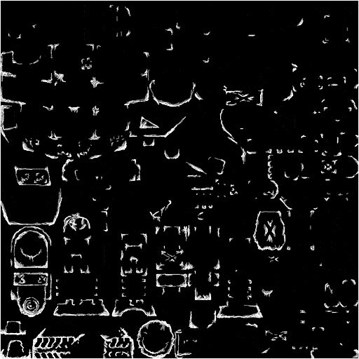
Note: Photoshop users can skip many of the above steps by displaying
the shadow layer as a layer below the rust layer and then deleting it
when its served its purpose as a template. I do not use Photoshop so I
can not get too specific, though.
However you do it, the goal is to end up with something like this (white
= transparent on this image):
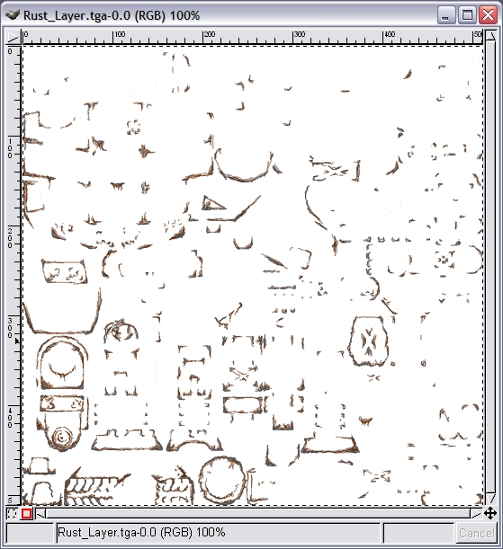
Step 7: Combining The Rust With The Shadows
This is so easy it does not even deserve a whole step but what the heck...
Basically, you want to stick your rust layer BENEATH your shadow layer.
If you have the transparencies correct then you should be able to just
open both up and paste the one over the other. Save it as "Shadow+Rust.tga"
If all goes well, you will end up with something like this:
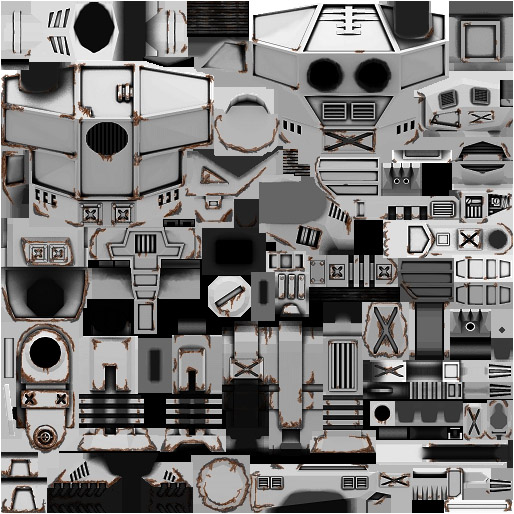
Step 8: Adding Materials, Paint, Windows, etc.
This step is rather simple. Use the grayscale image as a template to
place the materials on your 'Mech. Anything that you want to be a color,
paint it a color. Make sure that two touching panels are not the same
color and paint everything else black. Now save it as "Material guide.bmp."
Next, find anything you want to be a solid color and paint it white. If
you want some to have a red tint, but not be solid red, paint it grey.
Darker is fewer tints while lighter are closer to solid. Save this as
"Material alpha.bmp."
Now open "Material guide.bmp" and start painting the pieces the colors
you want them to be in game. You can use any method you want such as brushes,
textures, solid fill, etc.
All that is left is to combine the colored piece with the alpha channel
in TGA Tool 2. Once you are done, you might have something like this:
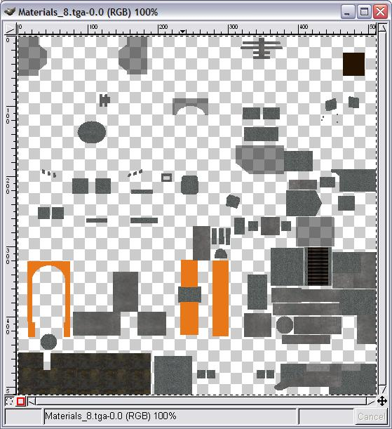
Notice the grey areas with the checks showing through. Those areas have
a dark grey tint but not solid grey paint. The dark brown area in the
upper right is the cockpit. On mine, its color is 38, 19, 2 (RGB). I find
it works nicely.
Step 9: Merging The Layers
What you want to do now is place "Shadow+Rust.tga" on top of your material
image. You should get something like this:
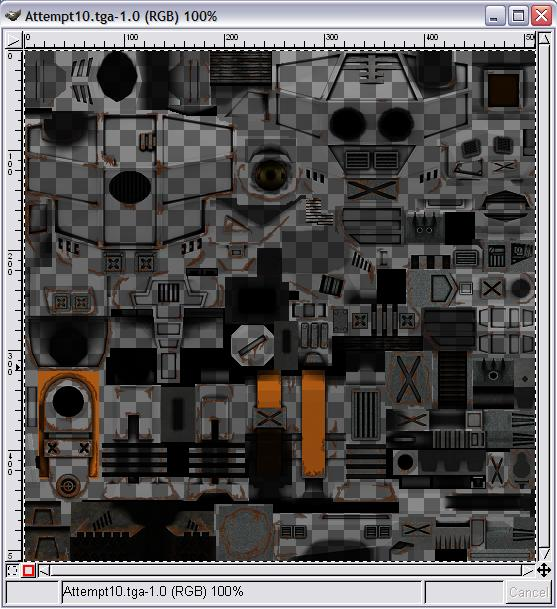
If you do not like it, there are several things you can do:
- Make the shadows more or less visible by lightening or darkening the
alpha channel of the shadow + rust layer.
- Change the colors on the material layer (I tried 8 different combos
before I decided).
- Add or remove rust and other details then recombine the rust and shadow
layers.
Step 10: Final Details
Just open it up and tweak it if you want. Use a brush and touch up any
part that needs it. Then post it, have it reviewed, and be ready to re-do
lots of things. I bet I threw out 80% of the work I did on the Stiletto...
You will most likely have to change a few things on the model and texture.
The good thing is that your image is a combo of several simpler images
so it should be fairly easy to fix. I am just going to show you the final
texture you guys are all shooting to obtain in game:
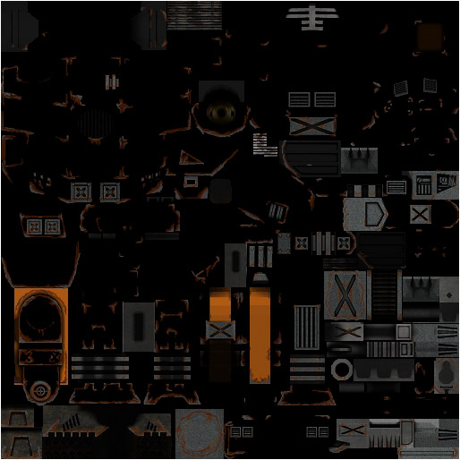
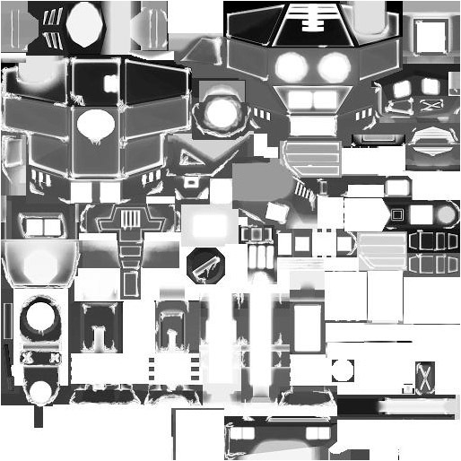
Conclusion
Well, there you have it - The Fireslavish Guide To Modeling. It is by
no means the only way and it is unlikely that it is the best way. No two
modelers do it exactly the same and you will probably develop a style
of your own. Hopefully, this will help you understand the process enough
that you will be able to make a 'Mech regardless of the exact steps you
follow. Perhaps you can even write down your method for the other newcomers.
That is what I did. I figured a noob could explain it to other noobs and
keep it fairly understandable.
I hope that other modelers will discover their talents and I hope that
our other skilled modelers will not be shy to contribute to this guide
or their own guide. Even better, you can now call yourself an "artist,"
something I would have found incredibly amusing not too long ago considering
my pen & paper stick
|